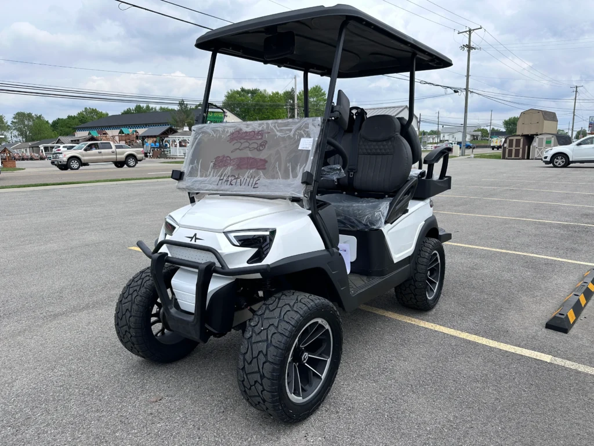
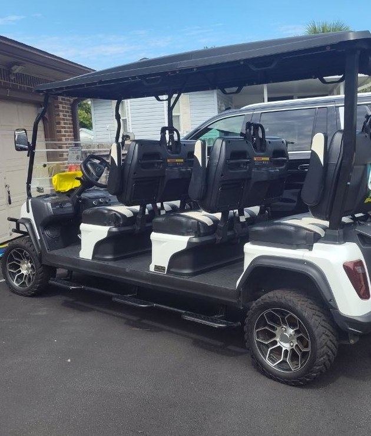
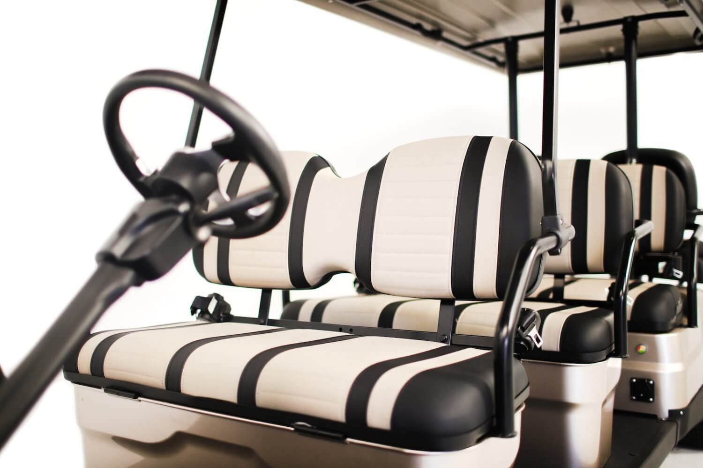

Brand new street-legal carts from $99/day — delivered to your Miramar Beach condo or vacation rental
Golf cart rental in Miramar Beach, FL costs $99 per day for a brand new 4-seat cart, $149/day for a 6-seat Land Rover style cart, and $199/day for an 8-seat cart. Every cart is brand new and street legal, delivered to your Miramar Beach condo, vacation rental, or hotel — free on bookings of 4 days or more. Renters must be 18+ with a valid driver's license. Call or text (850) 299-8575 to book.



We deliver Golf Carts Delivered ASAP! to condos, vacation rentals, and hotels throughout Miramar Beach, FL — including Scenic Gulf Drive, Grand Boulevard, Sandestin Golf & Beach Resort, Seascape Resort, and Silver Sands. Whether you're staying beachfront or in the Sandestin area, we bring the cart to your door charged and ready to ride, and pick it back up when your rental ends.
Yes. Street-legal golf carts (Low-Speed Vehicles) with headlights, seat belts, and turn signals are permitted on most roads in Miramar Beach (Walton County) — the perfect way to cruise Scenic Gulf Drive, Pompano Joe's, Whale's Tail, and Baytowne Wharf. Drive with headlights and turn signals, follow posted limits, and use the dedicated cart parking at beach accesses and Grand Boulevard. Every cart in our fleet is brand new and fully street legal, and we include a quick orientation with every rental.
Beach parking fills up fast and is never cheap. A golf cart parks free at most beach accesses and lets the whole family ride together. For most Miramar Beach vacations, a golf cart beats a rental car on cost, parking, and fun — see our full golf cart vs. car comparison.
Booking takes one phone call. Call or text (850) 299-8575, tell us your dates and how many seats you need, and we'll confirm availability and arrange delivery. During peak season (March–August), we recommend booking a few days ahead — especially for the popular 6-seat Land Rover style carts.
Golf cart rentals in Miramar Beach start at just $99 per day for a brand new 4-seat cart. 6-seat Land Rover style carts are $149/day and 8-seat carts are $199/day, with free delivery on rentals of 4 days or more.
We deliver and pick up golf carts anywhere in Miramar Beach, FL — including Scenic Gulf Drive, Grand Boulevard, Sandestin, Seascape, and Silver Sands. Delivery is free on rentals of 4 days or more.
Yes. Street-legal golf carts (LSVs) with headlights, seat belts, and turn signals are permitted on most roads in Miramar Beach. Every cart we rent is brand new and fully street legal.
Renters must be 18 or older with a valid driver's license. We include a quick orientation and safety walkthrough with every Miramar Beach golf cart rental.
The cheapest golf cart rental in Miramar Beach is our brand new 4-seat electric cart at $99 per day. All carts are brand new, street legal, and delivered charged and ready to ride.
Yes. A golf cart is the most popular way to get around Miramar Beach — Scenic Gulf Drive, restaurants, shops, and beach accesses are all a short cruise away. Rentals start at $99/day with free delivery on 4+ days.
Yes. Grand Boulevard Town Center has convenient cart parking near the shops, restaurants, and weekly events. It's one of the most popular golf cart destinations in Miramar Beach.
Yes. We deliver to Sandestin Golf & Beach Resort villas, Seascape, and the surrounding Miramar Beach communities. Delivery is free on rentals of 4 days or more — call (850) 299-8575 to confirm your address.
Staying in Destin instead? See our golf cart rentals in Destin, FL. New to renting? Start with the Ultimate Golf Cart Rental Guide.